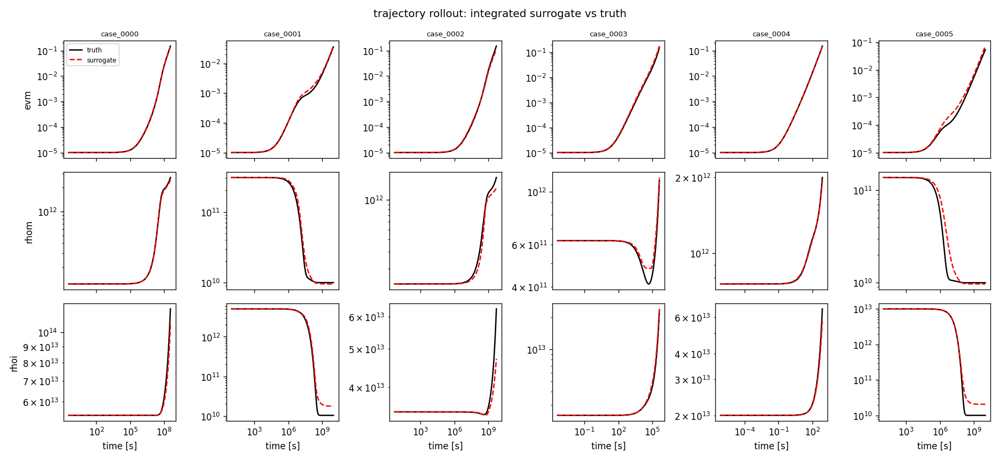
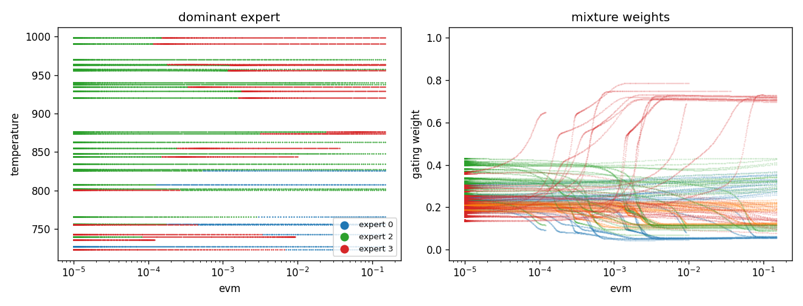

Mixture-of-Experts Constitutive Surrogate
A complete, self-contained workflow for training a surrogate of a constitutive
model -- a differential equation whose right-hand side gives the rate of change
of a material's internal state -- as a pypolymix mixture of experts.
Unlike the other examples in this gallery, which are single notebooks, this one is a small set of scripts you are meant to copy and point at your own data. It covers the parts that a notebook usually skips: an on-disk data contract, transforms fitted on the training split and versioned with the model, checkpointing and resume, and an evaluation that integrates the learned right-hand side forward in time.
Everything here is deterministic: every parameter group is a
DeterministicGroup, so the model learns a point estimate. That is deliberate.
A deterministic fit is the right first step, it is the natural initialization and
prior center for a stochastic fit, and it keeps the moving parts down while you
get your data plumbing right. Going stochastic below shows
the diff.
The problem
A constitutive model is an ordinary differential equation in the material state,
where \(q\) is the internal state (here: equivalent creep strain and the mobile and immobile dislocation densities) and \(u\) the imposed controls (temperature, stress, irradiation flux). Evaluating \(f\) inside a finite-element solver is often far more expensive than the structural solve around it, which is the motivation for replacing \(f\) with a surrogate.
The learning problem is ordinary supervised regression,
but the data is not ordinary. Across the operating envelope the strain rate spans eleven orders of magnitude, the density rates change sign, and the material moves between physically distinct regimes -- glide-dominated, climb-dominated, recovery-dominated -- with sharp transitions between them.
Why a mixture of experts. A single network has to represent every regime with one set of weights, and gradient descent trades them off against each other. A mixture
lets a small gating network \(h\) partition the input space and lets each expert \(f_e\) specialize. The partition is learned, not imposed, and you can read it off afterwards -- see the gating figure below, where one expert takes over past a strain of roughly \(10^{-3}\) and another owns the low-temperature branch.
Why pypolymix. MixtureOfExperts is already vectorized over parameter
samples, and the parameter vector is supplied by a list of parameter groups rather
than living inside the modules. That indirection costs nothing here and is what
makes the stochastic extension a local change instead of a rewrite.
Quickstart
pip install "pypolymix[examples]"
cd docs/examples/constitutive_model
python data.py --out toy_data # ~30 s
python train.py --data-dir toy_data --run-dir runs/demo # ~2 min on one GPU
python evaluate.py --run-dir runs/demo # ~1 min
data.py synthesizes a dataset so the example runs with no data at hand; skip it
if you have your own (see Bring your own data). Every knob
is a flag derived from the Config dataclass in config.py; run
python train.py --help to see all of them.
Defaults produce a 4-expert mixture with 52,672 parameters in 44 parameter
groups, trained for 150 epochs at roughly 0.65 s/epoch. It also trains fine on
CPU, just slower -- add --device cpu --batch-size 1024.
Results on the synthetic dataset
| output | one-step raw NRMSE | rollout median log₁₀ RMSE |
|---|---|---|
devm_dt |
0.080 | 0.048 |
drhom_dt |
0.236 | 0.036 |
drhoi_dt |
0.243 | 0.019 |
The right-hand column is the one that matters: it is the error after integrating the learned right-hand side over a full held-out trajectory, in decades of the state variable. A log₁₀ RMSE of 0.02–0.05 is a 5–12 % error in the state after the model has been driven by its own predictions across up to ten decades of time.

Six held-out cases. Black is the reference trajectory, red is the surrogate integrated from the same initial state under the same controls.

The learned partition. Left: which expert dominates, over strain and temperature. Right: the mixture weights themselves. The gate discovered the strain threshold and the temperature branch on its own; nothing in the loss asked it to.
Bring your own data
train.py and evaluate.py read this layout and nothing else.
<data_dir>/
meta.json names, state/control split, row counts
train/X.npy (N, 6) float32 val/X.npy test/X.npy (test optional)
train/Y.npy (N, 3) float32 val/Y.npy test/Y.npy
rollout/case_0000.npz {"t": (T,), "X": (T, 6)} (optional)
rollout/case_0001.npz ...
| file | shape | dtype | contents |
|---|---|---|---|
X.npy |
(N, 6) |
float32 |
one row per sample, [state, controls] |
Y.npy |
(N, 3) |
float32 |
the matching dq/dt |
case_*.npz/t |
(T,) |
float64 |
strictly increasing clock for one trajectory |
case_*.npz/X |
(T, 6) |
float64 |
the reference trajectory and its controls |
meta.json:
{
"input_names": ["evm", "rhom", "rhoi", "temperature", "stress", "flux"],
"output_names": ["devm_dt", "drhom_dt", "drhoi_dt"],
"state_indices": [0, 1, 2]
}
state_indices[j] is the column of X holding the state whose rate is output
j. This is the only structural assumption in the example. One-step training
does not need it, but it is what lets evaluate.py close the loop and integrate
the model, and it is what the d log10(q)/dt change of variable in
transforms.py keys off. Controls are whatever columns are left
over.
Practical notes:
- Rows are read through
np.load(..., mmap_mode="r"), soX.npymay be far larger than memory. Shuffle once when you write the file; the loader shuffles indices, and random access into a memory-mapped array on spinning storage is slow. - Split by case, not by row. Rows from one trajectory are highly correlated;
splitting them randomly gives a validation loss that looks great and means
nothing.
data.pyassigns whole cases to splits, which is why the training loss here settles roughly an order of magnitude below the validation loss. - Rollout cases should be genuinely held out -- not in
train/in any form. - Different input/output widths work: pass
--num-inputs/--num-outputsand adjust--state-indices,--log-input-columns,--output-powers. The defaults assume the 6/3 layout above.
Choosing a transform
Raw constitutive rates are hostile to a mean-squared error. In the toy dataset
devm_dt spans 1e-15 to 3e-4; an unweighted MSE on those numbers optimizes
the largest thousand rows and ignores everything else.
transforms.py provides a pair that works well on creep data:
| stage | why | |
|---|---|---|
| in 1 | log10 on the strictly positive input columns |
eight decades of state become an interval of width ~8 |
| in 2 | median / IQR centering | robust to the tails that survive the log |
| out 1 | dq/dt -> d log10(q)/dt = (dq/dt)/(q ln 10) |
removes the state's dynamic range from its own rate |
| out 2 | signed power sign(v) * abs(v)**p, small p |
compresses the remaining decades, keeps the sign and the zero |
| out 3 | median / IQR centering | puts all three outputs on the same footing in the loss |
These are a suggestion, not a universal recipe. They encode assumptions -- that the logged inputs are strictly positive, that a rate divided by its own state is better behaved, that the residual distribution is heavy-tailed and symmetric about zero. Check them:
- Histogram your transformed targets. You want something roughly bell-shaped. A
spike at zero with long tails means
pis too large; a broad plateau means it is too small and you are amplifying near-zero noise. transforms.suggest_power(y[:, j])automates that judgment crudely, by minimizing excess kurtosis overp = 1/1 ... 1/24.data.pyprints its suggestion for the generated data. The defaults here (1/11, 1/7, 1/7) came from that; a real creep dataset wanted1/15, 1/11, 1/15.- If your rates are not heavy-tailed,
StandardizeInput/StandardizeOutputare drop-in replacements. Swap them insuggested_pair()and retrain -- the comparison is worth doing once on your own data rather than taking the table above on faith. - Writing your own means subclassing
InputTransformorOutputTransform(fit,forward,config, plusinversefor outputs) and decorating it with@transforms.registerso it round-trips throughtransforms.json.
The fitted transform is part of the model. It is written to
<run_dir>/transforms.jsonon the first epoch and reloaded on every resume and evaluation. Deleting or refitting it silently invalidates every checkpoint in that directory: the weights were trained against one normalization and will be applied under another, and nothing raises. If you change transform settings, use a new run directory.
Statistics are fitted on at most --fit-max-rows (default 10⁶) sampled training
rows. Robust quantiles converge long before that; there is no reason to stream
hundreds of millions of rows.
How the model is built
model.py is about eighty lines and uses pypolymix components
unmodified:
experts = [NeuralNetwork(6, 3, width=64, depth=4, activation=F.silu) for _ in range(4)]
gate = GatingNetwork(6, num_experts=4, width=16, depth=1, activation=F.silu)
surrogate = MixtureOfExperts(experts, gate)
model = StochasticModel(surrogate, groups)
The parameter vector is flat and is sliced by position:
[ expert 0 | expert 1 | expert 2 | expert 3 | gate ]
13,123 13,123 13,123 13,123 180 = 52,672 scalars
each expert = [ W0 b0 | W1 b1 | W2 b2 | W3 b3 | W4 b4 ] -> 10 groups
each gate = [ W0 b0 | W1 b1 ] -> 4 groups
total 44 groups
Two important remarks:
One group per layer, not one group for the whole mixture.
DeterministicGroup initializes itself as torch.randn(n) -- unit variance,
regardless of layer shape. A depth-4 network seeded that way saturates its
activations immediately and does not train. Splitting the vector into one group
per weight matrix and one per bias lets network_groups() seed each with the
distribution torch.nn.Linear would have used, which for the Kaiming default
a = sqrt(5) is just U(-1/sqrt(fan_in), +1/sqrt(fan_in)) for weights and
biases. The split is also the handle for making part of the model stochastic
later.
Group order must match the surrogate's slicing. StochasticModel
concatenates groups in list order; MixtureOfExperts slices experts in order with
the gate last. StochasticModel validates the total parameter count but not the
order, so a permutation trains to garbage without any error. If you reorder the
loop in build_moe(), reorder the slices too.
Changing the architecture is a flag: --num-experts, --expert-width,
--expert-depth, --gate-width, --gate-depth, --activation. The experts here
are constant-width because that is what pypolymix.NeuralNetwork provides; a
tapered stack such as [128, 64, 32, 16, 8] is often a better use of the same
budget, and getting one is a matter of subclassing SurrogateModel with the same
param_slices convention -- NeuralNetwork is the template, and
network_groups() will consume the result unchanged.
Training
The objective is the whole of it:
loss = F.mse_loss(model(T_x(X)), T_y(X, Y))
No regularization term appears. DeterministicGroup.distribution_loss() exists
but is never called; shrinkage is AdamW's --weight-decay.
AdamW with CosineAnnealingWarmRestarts (--coswr-t0 10 --coswr-tmult 2). Warm
restarts suit this problem: each restart kicks the model out of the basin it
settled into, and with a mixture that often reshuffles which expert owns which
region. Set --epochs to t0 * (tmult**k - 1) / (tmult - 1) -- 10, 30, 70, 150,
310, ... -- to stop on a cycle boundary rather than mid-descent. The default of
150 is four complete cycles.
Checkpointing:
best.pttracks the lowest validation loss. In the run above that was epoch 70, the end of the third cycle -- not epoch 149.last.ptis written every epoch, andtrain.pyresumes from it automatically, restoring model, optimizer and scheduler state. Re-running the same command continues; it does not start over. Delete the run directory to start over. Unlike some setups this announces the resume rather than doing it silently, but it is still the most common way to be confused by your own results.metrics.csvgets one row per epoch (epoch, train_loss, val_loss, lr, seconds).
Both checkpoints embed the full Config and meta.json, so evaluate.py
reconstructs the architecture without being told what it was.
Evaluation
evaluate.py asks two questions that do not have the same answer.
One-step error compares f(x) against the true dq/dt on held-out rows, in
both raw and transformed units, and writes one_step.csv. It is cheap and it is
exactly what the training loss optimizes -- which is why on its own it is not
evidence of much.
Rollout integrates dq/dt = f(q, u) from the initial state of a held-out
trajectory and compares against the reference, writing rollout.csv. Errors
compound, and after the first step the model is being asked about states it
generated itself. Integration is done in log-state,
with scipy.integrate.solve_ivp(method="LSODA"). The log formulation keeps
positive states positive without a solver constraint and is far better
conditioned when the state moves over eight decades. It is also what makes the
whole thing tractable: a surrogate that is slightly non-smooth in raw units can be
impossible to integrate at all, and a case that fails to integrate is recorded as
status=failed rather than silently dropped.
Rollout is the slow part -- one forward pass per solver step at batch size one, so
it is dominated by dispatch overhead rather than arithmetic, and running it on CPU
is often faster than on GPU. Use --rollout-cases to bound it.
Figures go to <run_dir>/figures/: parity.png, gating.png, rollout.png.
--no-figures skips them.
Going stochastic
The deterministic fit is a starting point. To get uncertainty in predictions, change the parameter groups and add one term to the loss.
In model.py, swap the group constructor:
from pypolymix.parameter_groups import IIDGaussianGroup
group = IIDGaussianGroup(name, num_params)
with torch.no_grad():
group.mean.copy_(theta0) # from the deterministic fit
group.log_std.copy_(torch.log(0.1 * theta0.abs().clamp_min(1e-3)))
In train.py, average the data term over posterior draws and add the divergence:
pred = model(z_in, num_samples=num_samples) # (S, batch, outputs)
data_loss = F.mse_loss(pred, z_target.expand_as(pred))
loss = data_loss + model.distribution_loss()
Two important remarks:
- Make the prior match the parameter scale. A shared
N(0, 1)prior over weights whose magnitudes span five orders of magnitude is a strong and arbitrary statement. Either pass a per-groupGaussianPriorcentered on the deterministic fit, or reparameterize astheta = theta0 + sigma0 * zand learnzagainst aN(0, I)prior. The second is usually easier: the prior becomes scale-free, and the posterior starts at exactlyq = pwith zero divergence, so early training is driven by the data alone. - You probably do not need every parameter to be stochastic. Making only the gate and the last layer of each expert stochastic, with the rest frozen at the deterministic solution, captures most of the useful predictive spread at a fraction of the cost -- and evaluation cost scales linearly in the number of posterior draws.
Then see Mixture of Experts for the stochastic MoE end to end, Custom Priors for per-group priors, Full Covariance and Low Rank Covariance for richer posteriors, and Theory for the derivation.
Scaling up
The scripts are single-device on purpose. The real workflow this is distilled from trained on 8.2 M rows across 8 GPUs.
- Data. One
.npyper split stops being convenient past a few tens of GB. Shard it and index the shards;DerivativeDataset.__getitem__already takes a list of indices and returns a whole batch, which is the part that matters. Do not go back to fetching rows one at a time and collating -- that alone was worth about two orders of magnitude. - Distribution. Wrap the model in
DistributedDataParallel, add aDistributedSampler, and fit the transforms on rank 0 only, with the other ranks waiting ontransforms.json. Every rank must use the same transform. - Throughput.
--amp(bfloat16 autocast) and a larger--batch-sizeare the first levers. Keep--grad-clip; mixture models occasionally produce a large gradient when the gate flips a region between experts. - Logging. Do not use a progress bar under
nohup. tqdm rewrites its line every step, and in a redirected log that becomes literal text -- an easy way to turn a training run into a multi-gigabyte log file.
Files
| file | contents |
|---|---|
| config.py | one dataclass with every knob; the CLI is derived from it |
| data.py | on-disk contract, memory-mapped loader, synthetic generator |
| transforms.py | transform protocol, the suggested pair, a plain alternative, suggest_power |
| model.py | initialization, parameter groups, build_moe() |
| train.py | training loop, checkpointing, resume |
| evaluate.py | one-step metrics, log-state rollout, figures |
Nothing outside this directory is imported except pypolymix, numpy, scipy,
torch and matplotlib. Copy the folder and start editing.